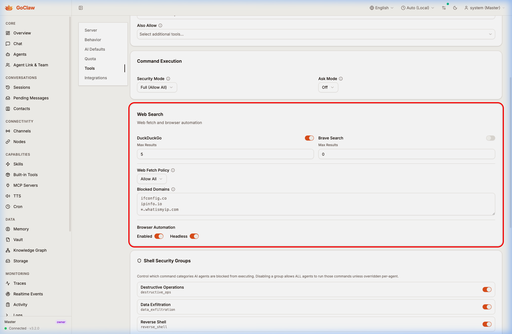
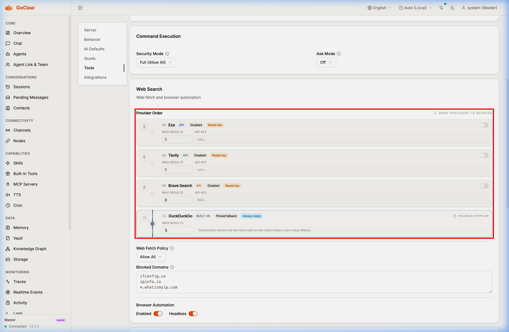
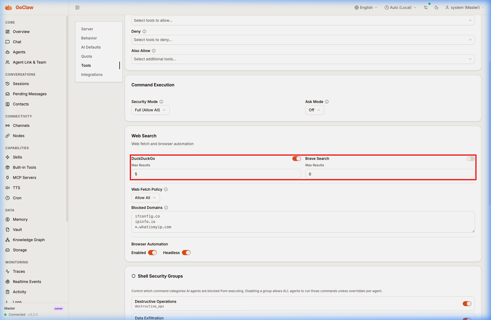
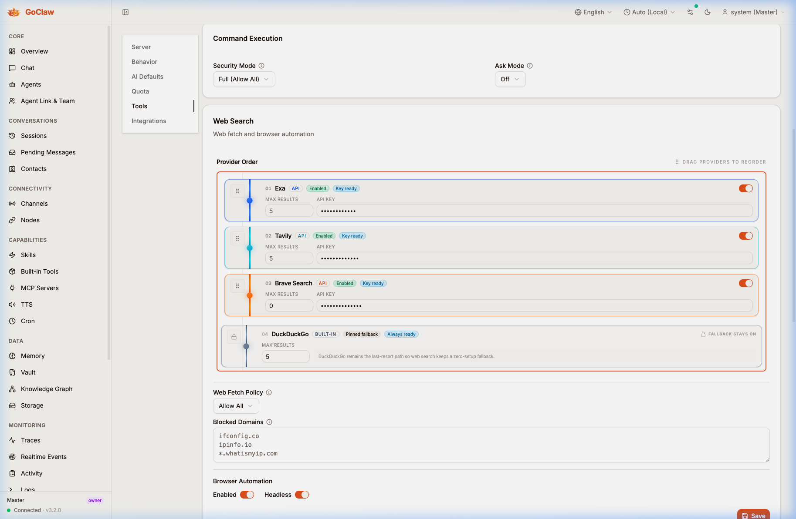

Web Search config now exposes a ranked provider chain with Exa, Tavily, Brave, and a visible DuckDuckGo fallback.
Operators can see the actual provider ordering path, configure it inline, and understand where the always-on fallback sits.
Red callout borders wrap the changed control surface itself, not just the section header. The rest of the page is unchanged context.
The old UI only exposes DuckDuckGo and Brave as a flat pair of controls. The new UI turns that area into a ranked provider-order surface with a visible chain and DuckDuckGo pinned as the last fallback.


Before, the detailed controls only cover DuckDuckGo and Brave. After, the UI supports the full provider chain with inline max-result and API-key fields. The highlighted after state was captured with local demo values entered only to show the enabled-row layout; those demo values were not part of the committed config.

